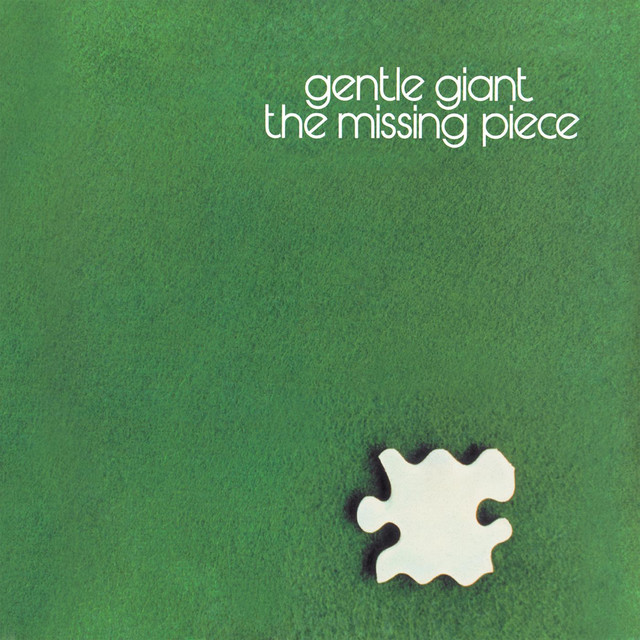

Gentle Giant - The Missing Piece



Información del álbum facilitada por discogs.com:
Fecha de lanzamiento: 1977
Géneros: Rock
Estilos: Prog Rock, Classic Rock
Pais: France
Votos: Media de 4.42 con 31 votos
Sello: Virgin
Artwork - Alex And Martin
Design - Frank Loriou
Mastered By - Nilesh Patel
Tracklist:
A1. Two Weeks In Spain 3:00
A2. I’m Turning Around 3:54
A3. Betcha Thought We Couldn’t Do It 2:30
A4. Who Do You Think You Are? 3:33
A5. Mountain Time 3:19
B1. As Old As You’re Young 4:19
B2. Memories Of Old Days 7:15
B3. Winning 4:12
B4. For Nobody 4:00